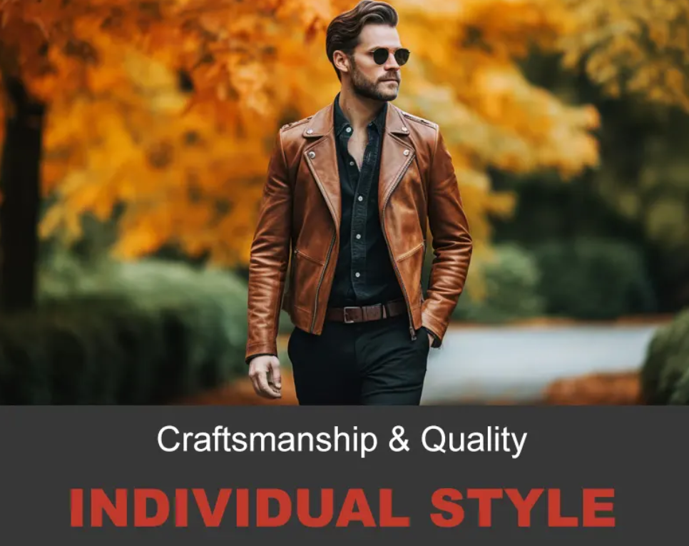
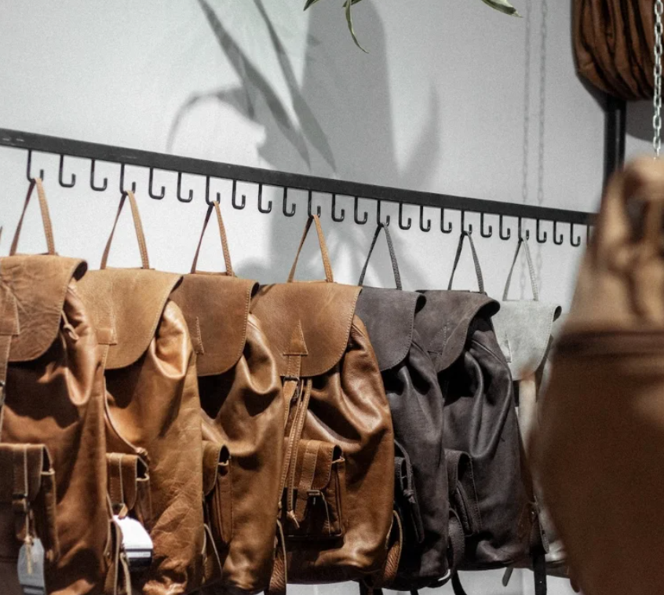

Our Story
Welcome to our review article on The Jacket Maker leather jackets. As avid enthusiasts of stylish outerwear, we understand the significance of finding the perfect leather jacket that combines craftsmanship, quality, and individual style. In this article, we take a closer look at The Jacket Maker, a renowned brand known for their range of leather jackets. We'll delve into their collection, exploring the various styles, designs, and materials they offer. From classic and timeless options to contemporary and trendsetting pieces, we'll assess the overall quality, attention to detail, and customer experience provided by The Jacket Maker. Join us as we provide an unbiased review of their leather jackets, helping you make an informed decision when it comes to adding a touch of sophistication and rugged elegance to your wardrobe.
Our Craftsmanship
At Inkwali Yenkosi, we take pride in our craftsmanship. Our skilled artisans use only the finest
materials to create leather products that are not only durable but also stylish. Each product is
meticulously handcrafted, ensuring attention to detail and quality.
Created using natural, free-range African leather, each one of Inkwali’s high-quality bags is designed for
longevity and practicality, with a special focus on continually upskilling the team and spreading the
Inkwali philosophy of “embracing basic goodness” and doing that which makes you feel positive.
Our Commitment
We are committed to sustainability and ethical practices. Our leather is sourced responsibly, and we aim to minimize our environmental footprint. We value our customers and their satisfaction is our top priority.
